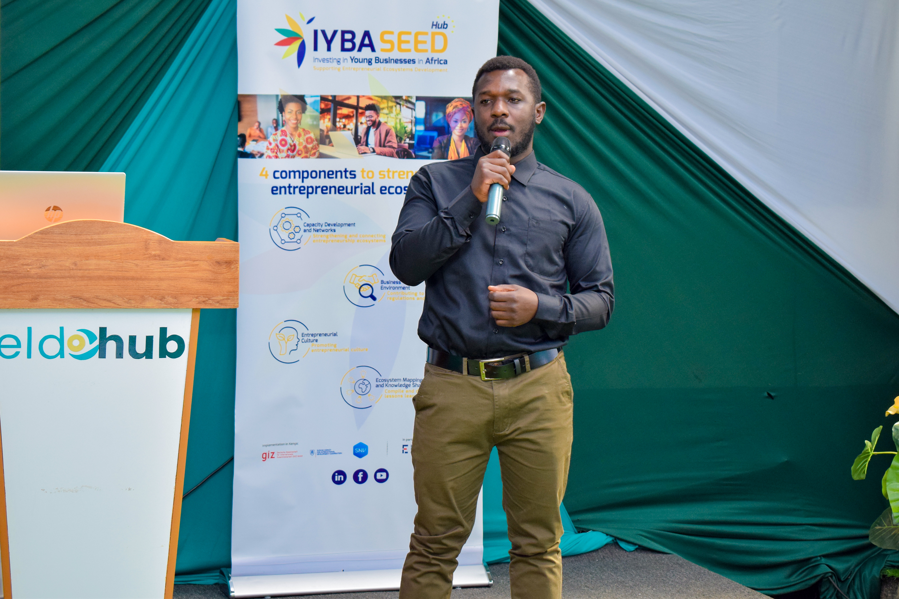
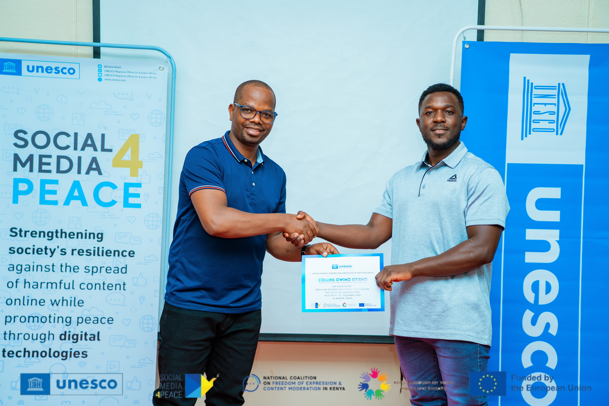

I'm Collins Owino, a Strategy Consultant
& Business Advisor based in
Nairobi, Kenya.

About Me.
I'm an Economist and Business Advisor based in Nairobi, helping organizations, entrepreneurs, and development programs drive sustainable growth through business strategy, project management, grants administration, and data-driven decision-making. With experience spanning youth empowerment, agribusiness, entrepreneurship development, and stakeholder engagement, I am passionate about creating soluti that generate lasting economic and social impact.
Experience
- USAID Empowered Youth Activity County Liaison Officer & Youth Development Specialist
- Agriculture and Food Authority (AFA) Project Coordinator
- ENABLE Youth Project Business Development & Entrepreneurship Trainer
- STEP Kenya ICT & Agribusiness Trainer
- Ustadi – Vijabiz Project Business Consultant & Enterprise Development Coach
- Royal Cap Mushroom Founder & Agribusiness Consultant
Awards/Recognitions
- 🏆 Judge, 4th Annual Symposium on AI & Tech Startups Kenyatta University | 2026
- 🏆 Women in Digital Business Certification International Trade Centre (ITC) & International Labour Organization (ILO) | 2023–2025
- 🏆 Global Development Digital Credential UTSA Center for Global Development, Strathmore Business School & International Trade Centre (ITC) | 2025
- 🏆 Google Digital Skills Bootcamp Certification Google Academy | 2025
- 🏆 Human-Centered Design & Design Thinking Certification USAID & Michigan State University | 2022
- 🏆 Soft Skills & Life Skills Development Certification USAID & Michigan State University | 2022
Skills
- Economics
- Business Strategy
- Project Management
- Entrepreneurship and Enterprise Development
- Research and Development
- Computer Literacy
Selected Work Gallery.

Panel Moderator
Moderated a panel discussion bringing together key stakeholders in the WASH sector to explore innovative funding mechanisms, strategic partnerships, and sustainable financing approaches. Facilitated knowledge exchange and dialogue on strengthening collaboration, resource mobilization, and impact-driven investments for sustainable WASH development

Business Development and Research Officer
Contributed to the Research Blueprint on Catalytic Funding and Partnerships Framework developed by Quercus Group in partnership with Plan International and the Grundfos Foundation. Conducted research, stakeholder analysis, and business development activities focused on innovative financing models, strategic partnerships, and sustainable resource mobilization to strengthen impact within the WASH sector.
{kind=link}

Financing the Future
Project Administrator for the IYBA SEED PROJECT GIZ in Partnership with WYLDE International Addressing Key areas on Financial Education and Strategic Funding Models for Women and Youth Startups During the Round Table Dialogue at Eldohub in Eldoret 2025.

Business Advisory Workshop
Advised small and growing businesses on strategic planning, financial management, business model development, and growth strategies. Supported entrepreneurs in identifying opportunities, overcoming operational challenges, and building sustainable enterprises through tailored business advisory services and mentorship.

Leader as Coach Graduate
Completed advanced leadership and coaching training focused on empowering teams, fostering growth, enhancing communication, and applying coaching principles to improve organizational performance and leadership effectiveness.
{kind=link}

Media and Information Literacy (MIL) Certification Bootcamp Graduate
Completed specialized training in media and information literacy, focusing on combating misinformation, strengthening community resilience against harmful online content, promoting digital citizenship, and leveraging technology to advance peace, inclusion, and informed public discourse
Hear it from My Happy Clients
 Victor Oduor
OviFarm.
Victor Oduor
OviFarm.
Collins provided exceptional business advisory support that helped us refine our growth strategy and improve our financial planning. His practical insights and hands-on approach enabled us to make better decisions and position our business for sustainable growth
 Kimani Mwangi
Ovilab & Co.
Kimani Mwangi
Ovilab & Co.
"Through Collins' entrepreneurship training, I gained the confidence and skills needed to transform my business idea into a viable enterprise. His mentorship was instrumental in helping me develop a clear business plan and access new opportunities."
 John Morgan
JP Morgan & Co.
John Morgan
JP Morgan & Co.
Working with Collins was a transformative experience. His analytical skills, professionalism, and commitment to achieving results made him a trusted advisor throughout our project.
 Henry Ford
Ford Motor Co.
Henry Ford
Ford Motor Co.
Collins has a unique ability to simplify complex business concepts and turn them into actionable strategies. His guidance helped us identify growth opportunities and improve our overall business model.
Years of Professional Experience
Delivered training in entrepreneurship, financial management, agribusiness, workforce readiness, and business development.
Happy Trained Individuals
Delivered training in entrepreneurship, financial management, agribusiness, workforce readiness, and business development.
Major Projects Delivered
Successfully delivered and supported projects across business development, youth empowerment, entrepreneurship, agribusiness, grants management, research, and stakeholder engagement, creating sustainable economic and social impact for communities and organizations across Kenya.
Hundreds of Positive Stakeholder Reviews
I am proud to have earned positive feedback from clients, entrepreneurs, development partners, and project stakeholders for my dedication to delivering impactful solutions, fostering meaningful partnerships, and driving measurable results across diverse initiatives..